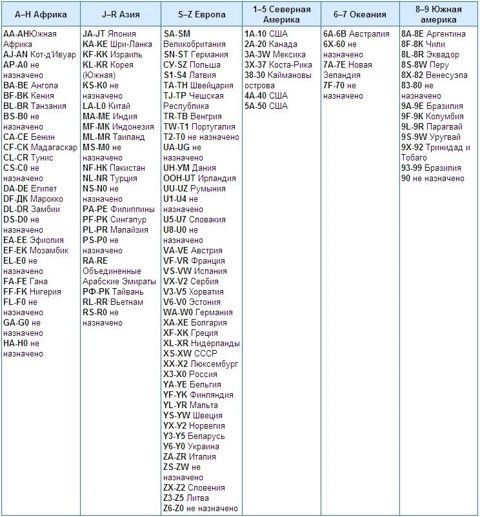

С 1981 года VIN состоит из 17 символов, букв латинского алфавита и цифр, которые не включают в себя буквы I (i), О (о), или Q (q) (чтобы избежать путаницы с цифрами)
VIN код(Vehicle identification number) — это уникальный код транспортного средства. Он состоит из трех частей: WMI, VDI и VIS .
WMI (World Manufacturers Identification) – трехсимвольный код, присваемый изготовителю с целью его идентификации. Первые два символа могут быть как цифрами, так и буквами, и обозначают географическую зону и страну в этой зоне (например, S-Z относятся к Европе, а SN-ST обозначают Германию). Третий символ обозначает фирму — производителя. При этом, производитель, выпускающий меньше 500 автомобилей в год, использует в третьей позиции цифру 9, а 12, 13 и 14-е позиции VIN — для остальной части своей идентификации. Некоторые производители используют третий символ как код для категории транспортного средства (например, легковой автомобиль или грузовик), а также для идентификации определенного подразделения производителя.
VDS (Vehicle Description Section) – 6 символов, которыми описывается сам автомобиль. Как будет зашифрована информация, определяет сам производитель. Последняя цифра обычно является контрольной. Она служит для дополнительной защиты от «перебивки VIN кода». Российские, японские, а также многие европейские и корейские производители не используют контрольную цифру.
VIS (Vehicle Identification Section) – восьмизначный код несет в себе дополнительную информацию об автомобиле (например, год выпуска, завод изготовитель). Последние 4 знака – всегда цифры.
Расшифровка VIN (ВИН-кода)
1-й символ (1 FALP62W4WH128703) — cтрана-производитель.
- 1-5 – Северная Америка: США (1,4,5), Канады (2), Мексика (3)
- J-R – Азия: Япония (J), Корея (K), Китай (L), Индия (М)
- S-Z – Европа: Англия (S), Германия (S, W), Италия (Z), Швеция (Y), Норвегия (Y), Франция (V), Испания (V), Венгрия (T), Чешская Республика (T), Украина (Y), Россия (X), СССР (X)
- 6-7 – Океания: Австралия (6)
Полный список кодов стран мира в VIN

2-й символ (1 F ALP62W4WH128703) — компания-производитель.
Audi(A), Acura (H), BMW(B), BMW (США) (U), Buick(4), Cadillac(6), Chevrolet(1), Chrysler©, Dodge(B или D), Ford(F), Ferrari (F), Fiat(F), General Motors (G), GM Canada(7), General Motors(G), Honda(H), Hyundai (M), Infiniti (N), Isuzu(S), Jaguar (A), Jeep(J), Lincoln(h), Land Rover (A), Lexus(T), Mercedes Benz(D), Mercedes Benz (США) (J), Mercury(M), Mitsubishi(M), Mitsubishi (США) (A), Nissan(N), Oldsmobile(3), Opel(O), Pontiac(2 или 5), Plymouth(P), Saturn(8), Skoda(M), Subaru (F), Suzuki(S), Toyota(T), VW(W), Volvo(V).
3-й символ (1F A LP62W4WH128703) — изготовитель автомобиля. Если производитель изготавливает меньше 500 автомобилей, то 3-й символ отмечается цифрой «9».
4-й — 8-й символы (1FA LP62W 4WH128703) — информация о модели автомобиля, типе кузова, комплектации, двигателе и т.д.
9-й символ (1FALP62W 4 WH128703) — всегда контрольная цифра для производителей из США и Китая. Для остальных – либо контрольная цифра, либо дополнительная информация об автомобиле.
10-й символ (1FALP62W4 W H128703) — обычно модельный год автомобиля. Важно помнить, что модельный год может опережать календарный и отсчитываться не с 1 января, а, к примеру, с августа (Audi) или с июля (ВАЗ) предыдущего календарного года. Многие европейские и японские производители, такие как Peugeot, Mercedes-Benz и Toyota, не указывает в VIN модельный год.
Расшифровка модельного года автомобиля в VIN
11-й символ (1FALP62W4W H 128703) — информация о заводе изготовителе.
12-й — 17-й символы (1FALP62W4WH 128703) — обозначают последовательность транспортного средства для производства, по ходу прохода по сборочному конвейеру.